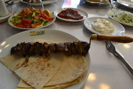
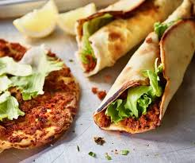
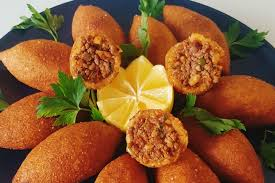
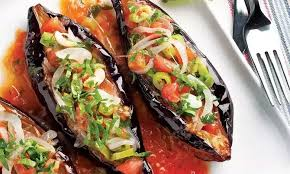
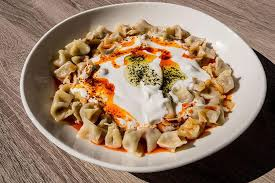

Yoğurt ve tereyağı ile soslanmış döner üzerine yapılan leziz bir yemek...
370 TL 300 TL

CAĞ KEBAP
Keçi veya kuzu etinden yapılan bir çeşit kebaptır. Önceden terbiye edilmiş etin yatık bir şişe geçirilip odun ateşi üzerinde pişirilmesiyle hazırlanır.Cağ adı verilen şişler kullanılarak servis yapılır.
70 TL 55 TL

LAHMACUN
İnce hamur üstüne dana kıyması, soğan baharatlarla yapılan yemek çeşidi.
50 TL 35 TL
POPÜLER YEMEKLER

İÇLİ KÖFTE
Bulgurun içine kıyma konularak hazırlanan, kızartılarak servis edilen bir lezet.
100 TLPopüler

İMAM BAYILDI
Biber ve domatesle doldurulmuş, zeytinyağla pişirilen bir sebze yemeği.
150 TLPopüler

MANTI
Açılan yufka kareler şeklinde kesilir, her karenin ortasına kıymalı harçtan küçük bir parça yerleştirilir, bohça şeklinde kapatılır ve pişirilip servis edilir.